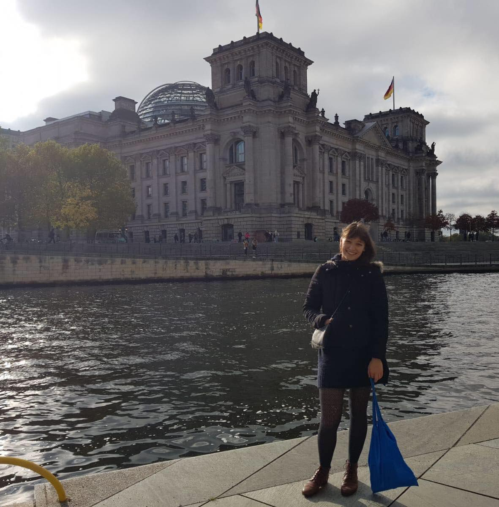

A short word from the president of the International Club
Kristina, president of the international club
Howdy,
If you are on this page it is probably because you are
looking for some good reasons to choose Supaero for your further
education, and you are right to do so !
Well, I don't need to cover the curriculum, do I? (I wasn't planning
to...) I am sure the academic staff will take care of that. Let’s
rather focus on Supaero’s student life which is just vibrant and
compelling…
Take advantage of the wide range of activities offered by
our student associations. Show us how good you are at your favorite
sport ! Or dare to try something completely new and discover your new
secret talent ! The choice is huge - from rugby to rowing, from
gliding to skydiving... if you can name it - we have it !
But it
isn’t just about sports : get in touch with your inner virtuoso and
start a new instrument, or let go of your outworn computer mouse, grab
a brush instead and paint what you have in mind.
Do you want to put your soft and hard skills to the test? Join
the Cubesat team and lay the tracks for the next TOLOSAT project; or
are you more interested in rocket science? Then the doors of Scube are
wide open for you. If you've always considered yourself a survivor,
you might be interested in a Mars simulation that a team of students
conducts in Utah once a year. The choice is huge, I'm curious to see
where you will end up.
Last but not least, Supaero has its own student bar (or in french
terms: foyer) where you can have dinner every day and
go out for a beer with your fellow students - right outside your front
door. But if that's not enough variety for you, then head off to the
city center of Toulouse (15 min bike ride). Enjoy the fabulous
panorama of the ville rose, which is reflected in the
river Garonne and get to know the third largest student city in France
in its full splendor.
The minute you arrive on the campus, you'll be surrounded
by people who will make you forget the exhausting journey and
homesickness right away. Nobody is left out here : everyone fits in
our community.
With over 60 cultures from all over the world on
campus, ISAE-Supaero takes pride in its cultural diversity.
Throughout the semester, there are various events that bring
distant cultures to your doorstep. For example, the Indian
Holi-Festival or the Chinese New Year take place here. And we
certainly don't want to leave you out. Have any ideas ? Join us and
bring a part of your homeland to Toulouse.
Have a look at our complete list of student clubs on the
website. And if you can think of one that should be added, then find
some allies and start your own club.
I'm really looking forward to meeting you next semester.
If you have any questions, my team and I will be happy to answer them.
(Contact link at the bottom)
Hoping to see you soon !